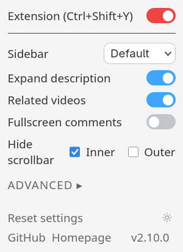
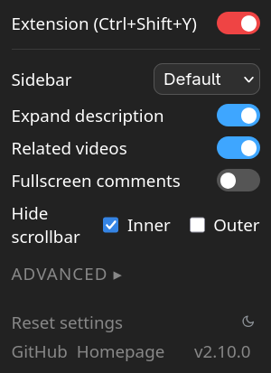
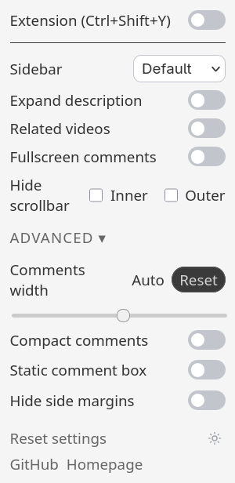
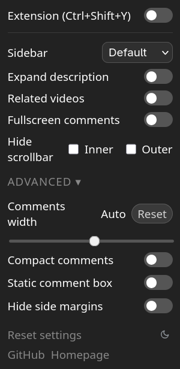

Default comments


Built-in comments

Popup




Right Side Comments is a browser extension that moves YouTube comments to the right sidebar on watch pages, so the conversation stays next to the video instead of below it.
Behavior
- Extension — Turn the whole extension on or off (Ctrl+Shift+Y).
- Sidebar — Choose between the custom right-side comments layout, the built-in panel, or disabled.
- Expand description — Expand when the extension is enabled; collapse when disabled.
- Related videos — Show or hide related videos.
Advanced
- Fullscreen comments — Use YouTube's fullscreen comments button while fullscreen is active.
- Hide scrollbar — Hide scrollbars on the comments area. Supports inner (comments section) and outer (entire sidebar) scrollbars separately.
- Comments width — Adjust the width of the comments area (15-40%) for both
DefaultandBuilt-insidebar modes, with a local reset control. - Compact comments — Tighter comment spacing.
- Static comment box — Keeps a fixed container in place while comments load, preventing UI layout shifts.
- Hide side margins — Remove spacing on the left and right sides of the video.
Shortcut
- Windows:
Ctrl+Shift+Y. - macOS:
Command+Shift+Y. - Linux:
Ctrl+Shift+U.